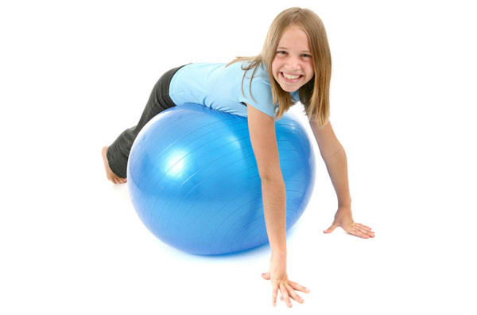

Five Step Home Fitness for Kids
Fitness for kids can be as simple as A-B-C. The key is to make any home
fitness program for kids fun. The A-B-C’s are Agility, Balance, and
Coordination. The program also works on strength, participation in
fitness games and stretching. The total exercise time comprises 60
minutes and 5 steps: (1) warm-up, (2) A-B-C activities, (3) strength
activities, (4) fitness games and (5) cool down.
Tag, jump rope or simple fun movement games are great warm ups for kids
and fitness. Warm up for about 5 minutes to ensure the heart rate is up
and muscles are loose. Follow this with the A-B-C activities for
approximately 20 minutes, changing up the activities every few minutes
to keep the kids’ interest. Agility activities include Army-training
style ladder runs, running or hopping across miniature hurdles made of
foam pool noodles or a similar activity. Work on improving balance by
one foot hopping around a pattern. Kids can pass an exercise ball back
and forth while each of them stand on one foot. Coordination activities
might be a bean bag toss game using hula-hoops on the floor as
“baskets”, ring toss using traffic cones as the goal, or “bowling” using
balls and cones. Use your imagination!
The next step is strength training for approximately 15 minutes. Keeping
the exercise fun is the best way to keep the kids engaged. Kids like
working with stability balls, and exercises like push ups with the legs
on the ball or sit ups on the ball are fun. A circuit-style workout is
good for kids and fitness because each station is short. The kids can
look ahead at the next station and move on from each activity after a
minute. This keeps the focus and attention of the kids and makes the
time go by very quickly.

After strength training is the fitness games step, one of the favorite
fitness for kids activities. They have been working hard on the previous
activities, and these games will reward them while continuing their
workout. Games can be for 10-15 minutes, and might include an obstacle
course using equipment from the prior steps, relay races, using
hula-hoops or playing a short game of basketball or tag football.
End the fitness for kids steps with 5 minutes of stretching and
cool-down. Focus on stretching all the major large muscle groups. The
kids can walk around the room for a few minutes to bring their heart
rates down and can work to focus on their breathing. This is a good time
to talk with kids about what they enjoyed about their kids and fitness
program today, and how they are feeling after exercising.